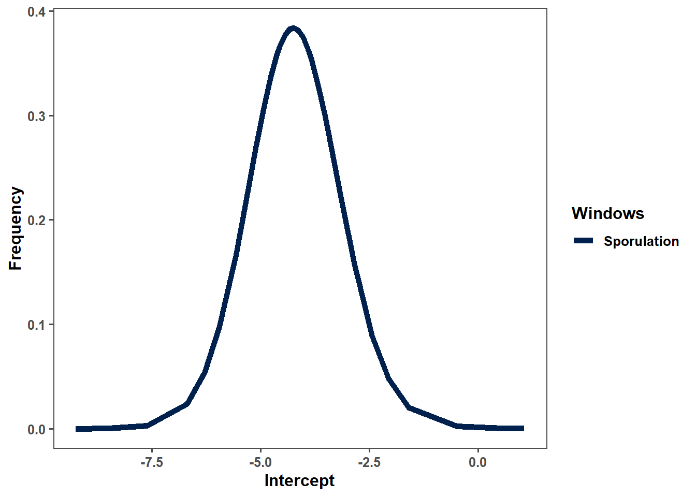

── Conflicts ────────────────────────────────────────── tidyverse_conflicts() ──
✖ tidyr::extract() masks raster::extract()
✖ dplyr::filter() masks stats::filter()
✖ dplyr::lag() masks stats::lag()
✖ raster::select() masks dplyr::select()
ℹ Use the conflicted package (<http://conflicted.r-lib.org/>) to force all conflicts to become errors
library(ggplot2)library(INLA)
Warning: pacote 'INLA' foi compilado no R versão 4.4.2
Carregando pacotes exigidos: Matrix
Anexando pacote: 'Matrix'
Os seguintes objetos são mascarados por 'package:tidyr':
expand, pack, unpack
This is INLA_24.12.11 built 2024-12-11 19:58:26 UTC.
- See www.r-inla.org/contact-us for how to get help.
- List available models/likelihoods/etc with inla.list.models()
- Use inla.doc(<NAME>) to access documentation
library(caret)
Warning: pacote 'caret' foi compilado no R versão 4.4.2
Carregando pacotes exigidos: lattice
Anexando pacote: 'caret'
O seguinte objeto é mascarado por 'package:purrr':
lift
# 1. Lendo a planilha de municípios com data de plantioma2 <-gsheet2tbl("https://docs.google.com/spreadsheets/d/1j0WZXtJsSMN1MAbmkppnCMnr5d9LnsxV/edit?usp=sharing&ouid=112586075609758894128&rtpof=true&sd=true")ma2_df <-as.data.frame(ma2)ma2_df$planting_date <-as.Date(ma2_df$planting_date, format ="%Y-%m-%d")# 2. Adicionando colunas para 90 dias antes e depois da data de plantioma3 <- ma2_df %>%mutate(pd_minus90 = planting_date -90, # 90 dias antes do plantiopd90 = planting_date +90# 90 dias após o plantio )# 3. Caminho para o arquivo NetCDFnetcdf_path <-"C:/Users/ricar/Documents/Extract_Xavier/code/data/pr_20010101_20240320_BR-DWGD_UFES_UTEXAS_v_3.2.3.nc"# 4. Função para verificar e interpretar as datas no NetCDF considerando "hours since"get_nc_dates <-function(netcdf_path) { nc_data <-nc_open(netcdf_path)# Lendo a variável de tempo e sua unidade time_var <-ncvar_get(nc_data, "time") time_units <-ncatt_get(nc_data, "time", "units")$valueprint(paste("Unidade de tempo no NetCDF:", time_units))# Extraindo a origem da unidade de tempo e verificando o formatoif (grepl("hours since", time_units)) { origin_date <-as.POSIXct(sub("hours since ", "", time_units), tz ="UTC") nc_dates <- origin_date +as.difftime(time_var, units ="hours") } else {stop("Unidade de tempo inesperada:", time_units) }# Fechando o arquivo NetCDFnc_close(nc_data)return(as.Date(nc_dates))}# 5. Chamando a função para obter as datasnc_dates <-get_nc_dates(netcdf_path)# 6. Função para extrair dados do NetCDF para uma linhaget_br_dwgd_data <-function(row, line_number, netcdf_path, nc_dates) {# Abrindo o arquivo NetCDF nc_data <-nc_open(netcdf_path)# Extraindo variáveis de interesse lon <- row$lon lat <- row$lat start_date <- row$pd_minus90 # Início: 90 dias antes do plantio end_date <- row$pd90 # Fim: 90 dias após o plantio# Gerando sequência de datas e comparando com o NetCDF date_seq <-seq.Date(start_date, end_date, by ="day") date_indices <-match(date_seq, nc_dates)# Removendo índices de datas inexistentes date_indices <- date_indices[!is.na(date_indices)]# Caso não haja datas válidas, retornar NULLif (length(date_indices) ==0) {message("Nenhuma data correspondente encontrada para linha ", line_number, " (", row$location, ")")nc_close(nc_data)return(NULL) }# Extraindo dados de precipitação para as coordenadas e datas específicas lon_idx <-which.min(abs(ncvar_get(nc_data, "longitude") - lon)) lat_idx <-which.min(abs(ncvar_get(nc_data, "latitude") - lat)) precip_data <-sapply(date_indices, function(i) {ncvar_get(nc_data, "pr", start =c(lon_idx, lat_idx, i), count =c(1, 1, 1)) })# Fechando o arquivo NetCDFnc_close(nc_data)# Se a extração de precip_data não retornar dados, retornar NULLif (length(precip_data) ==0||all(is.na(precip_data))) {message("Nenhum dado de precipitação encontrado para linha ", line_number, " (", row$location, ")")return(NULL) }# Criando um dataframe com os resultados e informações adicionais result <-data.frame(date = date_seq[!is.na(date_indices)],precipitation = precip_data,study = row$study,location = row$location,state = row$state,year =format(row$planting_date, "%Y"),planting_date = row$planting_date,mean_sev = row$mean_sev,lat = row$lat,lon = row$lon,level = row$level )return(result)}# 7. Iterando pelas linhas da planilha e extraindo os dados do NetCDFbox <- ma3 %>%split(1:nrow(.)) %>%map2_dfr(1:nrow(ma3), ~get_br_dwgd_data(.x, .y, netcdf_path, nc_dates), .id ="id")# 8. Visualizando o resultado finalprint(box)# 9. Salvando o resultado em um arquivo Excel#write_xlsx(box, "data/br_dwgd_prec.xlsx")
prec =read_xlsx("data/br_dwgd_prec.xlsx")unique(prec$year)prec = prec %>%filter(!state %in%c("SP"))prec$date =as.Date(prec$date)prec$study =as.factor(prec$study)prec$planting_date =as.Date(prec$planting_date)# Suponha que seu dataframe 'ma4' já está carregado e que a coluna 'days' está corretamente calculadaprec <- prec %>%mutate(days =as.numeric(date - planting_date))# %>%#filter(days >= 0)
Maximum temperature
library(dplyr)library(ncdf4)library(purrr)library(readr)library(writexl)# 1. Lendo a planilha de municípios com data de plantioma2 <-gsheet2tbl("https://docs.google.com/spreadsheets/d/1j0WZXtJsSMN1MAbmkppnCMnr5d9LnsxV/edit?usp=sharing&ouid=112586075609758894128&rtpof=true&sd=true")ma2_df <-as.data.frame(ma2)ma2_df$planting_date <-as.Date(ma2_df$planting_date, format ="%Y-%m-%d")# 2. Adicionando colunas para 90 dias antes e depois da data de plantioma3 <- ma2_df %>%mutate(pd_minus90 = planting_date -90, # 90 dias antes do plantiopd90 = planting_date +90# 90 dias após o plantio )# 3. Caminho para o arquivo NetCDFnetcdf_path <-"C:/Users/ricar/Documents/Extract_Xavier/code/data/Tmax_20010101_20240320_BR-DWGD_UFES_UTEXAS_v_3.2.3.nc"# 4. Função para verificar e interpretar as datas no NetCDF considerando "hours since"get_nc_dates <-function(netcdf_path) { nc_data <-nc_open(netcdf_path)# Lendo a variável de tempo e sua unidade time_var <-ncvar_get(nc_data, "time") time_units <-ncatt_get(nc_data, "time", "units")$valueprint(paste("Unidade de tempo no NetCDF:", time_units))# Extraindo a origem da unidade de tempo e verificando o formatoif (grepl("hours since", time_units)) { origin_date <-as.POSIXct(sub("hours since ", "", time_units), tz ="UTC") nc_dates <- origin_date +as.difftime(time_var, units ="hours") } else {stop("Unidade de tempo inesperada:", time_units) }# Fechando o arquivo NetCDFnc_close(nc_data)return(as.Date(nc_dates))}# 5. Chamando a função para obter as datasnc_dates <-get_nc_dates(netcdf_path)# 6. Função para extrair dados do NetCDF para uma linhaget_br_dwgd_data <-function(row, line_number, netcdf_path, nc_dates) {# Abrindo o arquivo NetCDF nc_data <-nc_open(netcdf_path)# Extraindo variáveis de interesse lon <- row$lon lat <- row$lat start_date <- row$pd_minus90 # Início: 90 dias antes do plantio end_date <- row$pd90 # Fim: 90 dias após o plantio# Gerando sequência de datas e comparando com o NetCDF date_seq <-seq.Date(start_date, end_date, by ="day") date_indices <-match(date_seq, nc_dates)# Removendo índices de datas inexistentes date_indices <- date_indices[!is.na(date_indices)]# Caso não haja datas válidas, retornar NULLif (length(date_indices) ==0) {message("Nenhuma data correspondente encontrada para linha ", line_number, " (", row$location, ")")nc_close(nc_data)return(NULL) }# Extraindo dados de Tmax para as coordenadas e datas específicas lon_idx <-which.min(abs(ncvar_get(nc_data, "longitude") - lon)) lat_idx <-which.min(abs(ncvar_get(nc_data, "latitude") - lat)) tmax_data <-sapply(date_indices, function(i) {ncvar_get(nc_data, "Tmax", start =c(lon_idx, lat_idx, i), count =c(1, 1, 1)) })# Fechando o arquivo NetCDFnc_close(nc_data)# Se a extração de tmax_data não retornar dados, retornar NULLif (length(tmax_data) ==0||all(is.na(tmax_data))) {message("Nenhum dado de Tmax encontrado para linha ", line_number, " (", row$location, ")")return(NULL) }# Criando um dataframe com os resultados e informações adicionais result <-data.frame(date = date_seq[!is.na(date_indices)],tmax = tmax_data,study = row$study,location = row$location,state = row$state,year =format(row$planting_date, "%Y"),planting_date = row$planting_date,mean_sev = row$mean_sev,lat = row$lat,lon = row$lon,level = row$level )return(result)}# 7. Iterando pelas linhas da planilha e extraindo os dados do NetCDFbox <- ma3 %>%split(1:nrow(.)) %>%map2_dfr(1:nrow(ma3), ~get_br_dwgd_data(.x, .y, netcdf_path, nc_dates), .id ="id")# 8. Visualizando o resultado finalprint(box)# 9. Salvando o resultado em um arquivo Excelwrite_xlsx(box, "data/br_dwgd_tmax.xlsx")
tmax =read_xlsx("data/br_dwgd_tmax.xlsx")tmax = tmax %>%filter(!state %in%c("SP"))tmax$date =as.Date(tmax$date)tmax$study =as.factor(tmax$study)tmax$planting_date =as.Date(tmax$planting_date)# Suponha que seu dataframe 'ma4' já está carregado e que a coluna 'days' está corretamente calculadatmax <- tmax %>%mutate(days =as.numeric(date - planting_date) )
Minimum temperature
library(dplyr)library(ncdf4)library(purrr)library(readr)library(writexl)# 1. Lendo a planilha de municípios com data de plantioma2 <-gsheet2tbl("https://docs.google.com/spreadsheets/d/1j0WZXtJsSMN1MAbmkppnCMnr5d9LnsxV/edit?usp=sharing&ouid=112586075609758894128&rtpof=true&sd=true")ma2_df <-as.data.frame(ma2)ma2_df$planting_date <-as.Date(ma2_df$planting_date, format ="%Y-%m-%d")# 2. Adicionando colunas para 90 dias antes e depois da data de plantioma3 <- ma2_df %>%mutate(pd_minus90 = planting_date -90, # 90 dias antes do plantiopd90 = planting_date +90# 90 dias após o plantio )# 3. Caminho para o arquivo NetCDFnetcdf_path <-"C:/Users/ricar/Documents/Extract_Xavier/code/data/Tmin_20010101_20240320_BR-DWGD_UFES_UTEXAS_v_3.2.3.nc"# 4. Função para verificar e interpretar as datas no NetCDF considerando "hours since"get_nc_dates <-function(netcdf_path) { nc_data <-nc_open(netcdf_path)# Lendo a variável de tempo e sua unidade time_var <-ncvar_get(nc_data, "time") time_units <-ncatt_get(nc_data, "time", "units")$valueprint(paste("Unidade de tempo no NetCDF:", time_units))# Extraindo a origem da unidade de tempo e verificando o formatoif (grepl("hours since", time_units)) { origin_date <-as.POSIXct(sub("hours since ", "", time_units), tz ="UTC") nc_dates <- origin_date +as.difftime(time_var, units ="hours") } else {stop("Unidade de tempo inesperada:", time_units) }# Fechando o arquivo NetCDFnc_close(nc_data)return(as.Date(nc_dates))}# 5. Chamando a função para obter as datasnc_dates <-get_nc_dates(netcdf_path)# 6. Função para extrair dados do NetCDF para uma linhaget_br_dwgd_data <-function(row, line_number, netcdf_path, nc_dates) {# Abrindo o arquivo NetCDF nc_data <-nc_open(netcdf_path)# Extraindo variáveis de interesse lon <- row$lon lat <- row$lat start_date <- row$pd_minus90 # Início: 90 dias antes do plantio end_date <- row$pd90 # Fim: 90 dias após o plantio# Gerando sequência de datas e comparando com o NetCDF date_seq <-seq.Date(start_date, end_date, by ="day") date_indices <-match(date_seq, nc_dates)# Removendo índices de datas inexistentes date_indices <- date_indices[!is.na(date_indices)]# Caso não haja datas válidas, retornar NULLif (length(date_indices) ==0) {message("Nenhuma data correspondente encontrada para linha ", line_number, " (", row$location, ")")nc_close(nc_data)return(NULL) }# Extraindo dados de Tmin para as coordenadas e datas específicas lon_idx <-which.min(abs(ncvar_get(nc_data, "longitude") - lon)) lat_idx <-which.min(abs(ncvar_get(nc_data, "latitude") - lat)) tmin_data <-sapply(date_indices, function(i) {ncvar_get(nc_data, "Tmin", start =c(lon_idx, lat_idx, i), count =c(1, 1, 1)) })# Fechando o arquivo NetCDFnc_close(nc_data)# Se a extração de tmin_data não retornar dados, retornar NULLif (length(tmin_data) ==0||all(is.na(tmin_data))) {message("Nenhum dado de Tmin encontrado para linha ", line_number, " (", row$location, ")")return(NULL) }# Criando um dataframe com os resultados e informações adicionais result <-data.frame(date = date_seq[!is.na(date_indices)],tmin = tmin_data,study = row$study,location = row$location,state = row$state,year =format(row$planting_date, "%Y"),planting_date = row$planting_date,mean_sev = row$mean_sev,lat = row$lat,lon = row$lon,level = row$level )return(result)}# 7. Iterando pelas linhas da planilha e extraindo os dados do NetCDFbox <- ma3 %>%split(1:nrow(.)) %>%map2_dfr(1:nrow(ma3), ~get_br_dwgd_data(.x, .y, netcdf_path, nc_dates), .id ="id")# 8. Visualizando o resultado finalprint(box)# 9. Salvando o resultado em um arquivo Excelwrite_xlsx(box, "data/br_dwgd_tmin.xlsx")
tmin =read_xlsx("data/br_dwgd_tmin.xlsx")tmin = tmin %>%filter(!state %in%c("SP"))tmin$date =as.Date(tmin$date)tmin$study =as.factor(tmin$study)tmin$planting_date =as.Date(tmin$planting_date)# Suponha que seu dataframe 'ma4' já está carregado e que a coluna 'days' está corretamente calculadatmin <- tmin %>%mutate(days =as.numeric(date - planting_date) )
Relative humidity
library(dplyr)library(ncdf4)library(purrr)library(readr)library(writexl)# 1. Lendo a planilha de municípios com data de plantioma2 <-gsheet2tbl("https://docs.google.com/spreadsheets/d/1j0WZXtJsSMN1MAbmkppnCMnr5d9LnsxV/edit?usp=sharing&ouid=112586075609758894128&rtpof=true&sd=true")ma2_df <-as.data.frame(ma2)ma2_df$planting_date <-as.Date(ma2_df$planting_date, format ="%Y-%m-%d")# 2. Adicionando colunas para 90 dias antes e depois da data de plantioma3 <- ma2_df %>%mutate(pd_minus90 = planting_date -90, # 90 dias antes do plantiopd90 = planting_date +90# 90 dias após o plantio )# 3. Caminho para o arquivo NetCDFnetcdf_path <-"C:/Users/ricar/Documents/Extract_Xavier/code/data/RH_20010101_20240320_BR-DWGD_UFES_UTEXAS_v_3.2.3.nc"# 4. Função para verificar e interpretar as datas no NetCDF considerando "hours since"get_nc_dates <-function(netcdf_path) { nc_data <-nc_open(netcdf_path)# Lendo a variável de tempo e sua unidade time_var <-ncvar_get(nc_data, "time") time_units <-ncatt_get(nc_data, "time", "units")$valueprint(paste("Unidade de tempo no NetCDF:", time_units))# Extraindo a origem da unidade de tempo e verificando o formatoif (grepl("hours since", time_units)) { origin_date <-as.POSIXct(sub("hours since ", "", time_units), tz ="UTC") nc_dates <- origin_date +as.difftime(time_var, units ="hours") } else {stop("Unidade de tempo inesperada:", time_units) }# Fechando o arquivo NetCDFnc_close(nc_data)return(as.Date(nc_dates))}# 5. Chamando a função para obter as datasnc_dates <-get_nc_dates(netcdf_path)# 6. Função para extrair dados do NetCDF para uma linhaget_br_dwgd_data <-function(row, line_number, netcdf_path, nc_dates) {# Abrindo o arquivo NetCDF nc_data <-nc_open(netcdf_path)# Extraindo variáveis de interesse lon <- row$lon lat <- row$lat start_date <- row$pd_minus90 # Início: 90 dias antes do plantio end_date <- row$pd90 # Fim: 90 dias após o plantio# Gerando sequência de datas e comparando com o NetCDF date_seq <-seq.Date(start_date, end_date, by ="day") date_indices <-match(date_seq, nc_dates)# Removendo índices de datas inexistentes date_indices <- date_indices[!is.na(date_indices)]# Caso não haja datas válidas, retornar NULLif (length(date_indices) ==0) {message("Nenhuma data correspondente encontrada para linha ", line_number, " (", row$location, ")")nc_close(nc_data)return(NULL) }# Extraindo dados de RH para as coordenadas e datas específicas lon_idx <-which.min(abs(ncvar_get(nc_data, "longitude") - lon)) lat_idx <-which.min(abs(ncvar_get(nc_data, "latitude") - lat)) rh_data <-sapply(date_indices, function(i) {ncvar_get(nc_data, "RH", start =c(lon_idx, lat_idx, i), count =c(1, 1, 1)) })# Fechando o arquivo NetCDFnc_close(nc_data)# Se a extração de rh_data não retornar dados, retornar NULLif (length(rh_data) ==0||all(is.na(rh_data))) {message("Nenhum dado de RH encontrado para linha ", line_number, " (", row$location, ")")return(NULL) }# Criando um dataframe com os resultados e informações adicionais result <-data.frame(date = date_seq[!is.na(date_indices)],rh = rh_data,study = row$study,location = row$location,state = row$state,year =format(row$planting_date, "%Y"),planting_date = row$planting_date,mean_sev = row$mean_sev,lat = row$lat,lon = row$lon,level = row$level )return(result)}# 7. Iterando pelas linhas da planilha e extraindo os dados do NetCDFbox <- ma3 %>%split(1:nrow(.)) %>%map2_dfr(1:nrow(ma3), ~get_br_dwgd_data(.x, .y, netcdf_path, nc_dates), .id ="id")# 8. Visualizando o resultado finalprint(box)# 9. Salvando o resultado em um arquivo Excelwrite_xlsx(box, "data/br_dwgd_rh.xlsx")
rh =read_xlsx("data/br_dwgd_rh.xlsx")rh = rh %>%filter(!state %in%c("SP"))rh$date =as.Date(rh$date)rh$study =as.factor(rh$study)rh$planting_date =as.Date(rh$planting_date)# Suponha que seu dataframe 'ma4' já está carregado e que a coluna 'days' está corretamente calculadarh <- rh %>%mutate(days =as.numeric(date - planting_date) )rh
weather_data = weather_data %>%mutate(T2M = (T2M_MAX+T2M_MIN)/2) #%>% #mutate(DPD = T2M - ((112 + 0.9*T2M)*RH2M^0.125 - 112 + 0.1*T2M))# Parâmetros da equação de Magnus-Tetensa <-17.27b <-237.7# Cálculo do ponto de orvalho (Td)alpha <- (a * weather_data$T2M) / (b + weather_data$T2M) +log(weather_data$RH2M /100)weather_data$Td <- (b * alpha) / (a - alpha)# Cálculo do DPDweather_data$DPD <- weather_data$T2M - weather_data$Td
Windown sowing
weather_data$planting_date =as.Date(weather_data$planting_date)weather_data <- weather_data %>%mutate(# Criando a data permitida diretamente com base no estadoallowed_date =case_when( state =="MT"~as.Date(paste0(format(planting_date, "%Y"), "-09-16")), state =="MS"~as.Date(paste0(format(planting_date, "%Y"), "-09-16")), state =="GO"~as.Date(paste0(format(planting_date, "%Y"), "-09-25")), state =="PR"~as.Date(paste0(format(planting_date, "%Y"), "-09-11")), state =="TO"~as.Date(paste0(format(planting_date, "%Y"), "-10-01")), state =="DF"~as.Date(paste0(format(planting_date, "%Y"), "-10-01")), state =="BA"~as.Date(paste0(format(planting_date, "%Y"), "-10-01")), state =="MG"~as.Date(paste0(format(planting_date, "%Y"), "-10-01")) ),# Ajustando o ano da allowed_date para casos de janeiro e fevereiroallowed_date =if_else(format(planting_date, "%m") %in%c("01", "02"), as.Date(paste0(as.numeric(format(planting_date, "%Y")) -1, "-", format(allowed_date, "%m-%d"))), allowed_date ),# Calculando a diferença em diasdays_difference =as.numeric(planting_date - allowed_date) )# Visualizar resultadoprint(weather_data)
# A tibble: 38,553 × 21
id wd90 study location state year planting_date mean_sev
<chr> <dttm> <chr> <chr> <chr> <chr> <date> <dbl>
1 1 2012-07-20 00:00:00 1 Campo Ver… MT 2012 2012-10-18 0.4
2 1 2012-07-21 00:00:00 1 Campo Ver… MT 2012 2012-10-18 0.4
3 1 2012-07-22 00:00:00 1 Campo Ver… MT 2012 2012-10-18 0.4
4 1 2012-07-23 00:00:00 1 Campo Ver… MT 2012 2012-10-18 0.4
5 1 2012-07-24 00:00:00 1 Campo Ver… MT 2012 2012-10-18 0.4
6 1 2012-07-25 00:00:00 1 Campo Ver… MT 2012 2012-10-18 0.4
7 1 2012-07-26 00:00:00 1 Campo Ver… MT 2012 2012-10-18 0.4
8 1 2012-07-27 00:00:00 1 Campo Ver… MT 2012 2012-10-18 0.4
9 1 2012-07-28 00:00:00 1 Campo Ver… MT 2012 2012-10-18 0.4
10 1 2012-07-29 00:00:00 1 Campo Ver… MT 2012 2012-10-18 0.4
# ℹ 38,543 more rows
# ℹ 13 more variables: lat <dbl>, lon <dbl>, level <chr>, days <dbl>,
# RH2M <dbl>, T2M_MAX <dbl>, T2M_MIN <dbl>, PRECTOTCORR <dbl>, T2M <dbl>,
# Td <dbl>, DPD <dbl>, allowed_date <date>, days_difference <dbl>
`geom_smooth()` using method = 'loess' and formula = 'y ~ x'
Warning: Removed 21300 rows containing non-finite outside the scale range
(`stat_smooth()`).
`geom_smooth()` using method = 'loess' and formula = 'y ~ x'
`geom_smooth()` using method = 'loess' and formula = 'y ~ x'
`geom_smooth()` using method = 'loess' and formula = 'y ~ x'
`geom_smooth()` using method = 'loess' and formula = 'y ~ x'
Warning: Removed 21300 rows containing non-finite outside the scale range
(`stat_smooth()`).
`geom_smooth()` using method = 'loess' and formula = 'y ~ x'
`geom_smooth()` using method = 'loess' and formula = 'y ~ x'
`geom_smooth()` using method = 'loess' and formula = 'y ~ x'
`geom_smooth()` using method = 'loess' and formula = 'y ~ x'
Warning: Removed 21300 rows containing non-finite outside the scale range
(`stat_smooth()`).
`geom_smooth()` using method = 'loess' and formula = 'y ~ x'
`geom_smooth()` using method = 'loess' and formula = 'y ~ x'
`geom_smooth()` using method = 'loess' and formula = 'y ~ x'
Time used:
Pre = 0.259, Running = 0.555, Post = 0.316, Total = 1.13
Fixed effects:
mean sd 0.025quant 0.5quant 0.975quant mode kld
(Intercept) -4.331 0.952 -6.147 -4.356 -2.362 -4.352 0
T2M 0.184 0.013 0.158 0.184 0.211 0.184 0
PRECTOTCORR 0.000 0.003 -0.007 0.000 0.006 0.000 0
RH2M 0.030 0.003 0.024 0.030 0.035 0.030 0
Random effects:
Name Model
year1 IID model
Model hyperparameters:
mean sd 0.025quant 0.5quant 0.975quant mode
Precision for year1 0.162 0.088 0.043 0.146 0.379 0.113
Deviance Information Criterion (DIC) ...............: 9456.67
Deviance Information Criterion (DIC, saturated) ....: 9437.87
Effective number of parameters .....................: 14.65
Watanabe-Akaike information criterion (WAIC) ...: 9454.87
Effective number of parameters .................: 12.83
Marginal log-Likelihood: -4786.44
CPO, PIT is computed
Posterior summaries for the linear predictor and the fitted values are computed
(Posterior marginals needs also 'control.compute=list(return.marginals.predictor=TRUE)')
Time used:
Pre = 0.13, Running = 0.278, Post = 0.053, Total = 0.461
Fixed effects:
mean sd 0.025quant 0.5quant 0.975quant mode kld
(Intercept) -4.390 0.974 -6.269 -4.405 -2.424 -4.402 0
T2M 0.171 0.020 0.132 0.171 0.211 0.171 0
PRECTOTCORR -0.007 0.006 -0.018 -0.007 0.004 -0.007 0
RH2M 0.034 0.005 0.025 0.034 0.043 0.034 0
Random effects:
Name Model
year1 IID model
Model hyperparameters:
mean sd 0.025quant 0.5quant 0.975quant mode
Precision for year1 0.237 0.129 0.061 0.212 0.557 0.164
Deviance Information Criterion (DIC) ...............: 3257.90
Deviance Information Criterion (DIC, saturated) ....: 3251.43
Effective number of parameters .....................: 14.59
Watanabe-Akaike information criterion (WAIC) ...: 3256.29
Effective number of parameters .................: 12.93
Marginal log-Likelihood: -1678.39
CPO, PIT is computed
Posterior summaries for the linear predictor and the fitted values are computed
(Posterior marginals needs also 'control.compute=list(return.marginals.predictor=TRUE)')
marg_0_20_1 <- inla_0_20$marginals.fixed[[1]] # Interceptmarg_0_20_1 =as.data.frame(marg_0_20_1)marg_0_20_1$windows =c("Survival")marg_0_20_1$parameter =c("Intercept")ggplot(marg_0_20_1, aes(x, y, color = windows)) +geom_line(size =2) + ggthemes::theme_few()+scale_color_viridis_d(option ="E")+labs(x ="Intercept",y ="Frequency",color ="Windows")+theme(text =element_text(size =12, face ="bold"))
marg_0_20_2 <- inla_0_20$marginals.fixed[[2]] # T2Mmarg_0_20_2 =as.data.frame(marg_0_20_2)marg_0_20_2$windows =c("Survival")marg_0_20_2$parameter =c("Temperature")ggplot(marg_0_20_2, aes(x, y, color = windows)) +geom_line(size =2) + ggthemes::theme_few()+scale_color_viridis_d(option ="E")+labs(x ="Intercept",y ="Frequency",color ="Windows")+theme(text =element_text(size =12, face ="bold"))
marg_0_20_3 <- inla_0_20$marginals.fixed[[3]] # PRECTOTCORRmarg_0_20_3 =as.data.frame(marg_0_20_3)marg_0_20_3$windows =c("Survival")marg_0_20_3$parameter =c("Rain")ggplot(marg_0_20_3, aes(x, y, color = windows)) +geom_line(size =2) + ggthemes::theme_few()+scale_color_viridis_d(option ="E")+labs(x ="Intercept",y ="Frequency",color ="Windows")+theme(text =element_text(size =12, face ="bold"))
marg_0_20_4 <- inla_0_20$marginals.fixed[[4]] # RH2Mmarg_0_20_4 =as.data.frame(marg_0_20_4)marg_0_20_4$windows =c("Survival")marg_0_20_4$parameter =c("Humidity")ggplot(marg_0_20_4, aes(x, y, color = windows)) +geom_line(size =2) + ggthemes::theme_few()+scale_color_viridis_d(option ="E")+labs(x ="Intercept",y ="Frequency",color ="Windows")+theme(text =element_text(size =12, face ="bold"))
Prediction
#inla_0_20$summary.fitted.valuespredictions <- inla_0_20$summary.fitted.valueswd_0_20$mean = predictions$meanpred_results <-data.frame(RH2M = wd_0_20$RH2M, PRECTOTCORR= wd_0_20$PRECTOTCORR,T2M = wd_0_20$T2M,predicted = inla_0_20$summary.fitted.values$mean, lower = inla_0_20$summary.fitted.values$`0.025quant`, upper = inla_0_20$summary.fitted.values$`0.975quant`)pred_results <- pred_results %>%pivot_longer(cols =-c(predicted,lower,upper), names_to ="variables")#b4e4c0 #ca5858#6280bc ##c20f0fplot_0_20 = pred_results %>%ggplot() +geom_smooth(aes(x = value, y = predicted, color = variables), se = F, size =2)+geom_smooth(aes(x = value , y = lower, color = variables), se = F, linetype =2, size =1.2) +geom_smooth(aes(x = value , y = upper, color = variables), se = F, linetype =2, size =1.2) +scale_color_manual(values =c("T2M"="darkred", "RH2M"="darkgreen","PRECTOTCORR"="#002f61")) +labs(x ="", y ="Target spot outbreak (%)",title ="Survival")+ ggthemes::theme_few()+facet_wrap(~variables, scales ="free", ncol =1, strip.position ="bottom") +theme(axis.title.y =element_text(size =12, face ="bold"),plot.title =element_text(hjust =0.5, size =12, face ="bold"), strip.text.x =element_blank(),#strip.background = element_blank(),legend.position ="none" )plot_0_20
`geom_smooth()` using method = 'gam' and formula = 'y ~ s(x, bs = "cs")'
`geom_smooth()` using method = 'gam' and formula = 'y ~ s(x, bs = "cs")'
`geom_smooth()` using method = 'gam' and formula = 'y ~ s(x, bs = "cs")'
marg_20_40_1 <- inla_20_40$marginals.fixed[[1]] # Interceptmarg_20_40_1 =as.data.frame(marg_20_40_1)marg_20_40_1$windows =c("Sporulation")marg_20_40_1$parameter =c("Intercept")ggplot(marg_20_40_1, aes(x, y, color = windows)) +geom_line(size =2) + ggthemes::theme_few()+scale_color_viridis_d(option ="E")+labs(x ="Intercept",y ="Frequency",color ="Windows")+theme(text =element_text(size =12, face ="bold"))

marg_20_40_2 <- inla_20_40$marginals.fixed[[2]] # T2Mmarg_20_40_2 =as.data.frame(marg_20_40_2)marg_20_40_2$windows =c("Sporulation")marg_20_40_2$parameter =c("Temperature")ggplot(marg_20_40_2, aes(x, y, color = windows)) +geom_line(size =2) + ggthemes::theme_few()+scale_color_viridis_d(option ="E")+labs(x ="Intercept",y ="Frequency",color ="Windows")+theme(text =element_text(size =12, face ="bold"))
marg_20_40_3 <- inla_20_40$marginals.fixed[[3]] # PRECTOTCORRmarg_20_40_3 =as.data.frame(marg_20_40_3)marg_20_40_3$windows =c("Sporulation")marg_20_40_3$parameter =c("Rain")ggplot(marg_20_40_3, aes(x, y, color = windows)) +geom_line(size =2) + ggthemes::theme_few()+scale_color_viridis_d(option ="E")+labs(x ="Intercept",y ="Frequency",color ="Windows")+theme(text =element_text(size =12, face ="bold"))
marg_20_40_4 <- inla_20_40$marginals.fixed[[4]] # RH2Mmarg_20_40_4 =as.data.frame(marg_20_40_4)marg_20_40_4$windows =c("Sporulation")marg_20_40_4$parameter =c("Humidity")ggplot(marg_20_40_4, aes(x, y, color = windows)) +geom_line(size =2) + ggthemes::theme_few()+scale_color_viridis_d(option ="E")+labs(x ="Intercept",y ="Frequency",color ="Windows")+theme(text =element_text(size =12, face ="bold"))
Prediction
#inla_20_40$summary.fitted.valuespredictions <- inla_20_40$summary.fitted.valueswd_20_40$mean = predictions$meanpred_results <-data.frame(RH2M = wd_20_40$RH2M, PRECTOTCORR= wd_20_40$PRECTOTCORR,T2M = wd_20_40$T2M,predicted = inla_20_40$summary.fitted.values$mean, lower = inla_20_40$summary.fitted.values$`0.025quant`, upper = inla_20_40$summary.fitted.values$`0.975quant`)pred_results <- pred_results %>%pivot_longer(cols =-c(predicted,lower,upper), names_to ="variables")plot_20_40 = pred_results %>%ggplot() +geom_smooth(aes(x = value, y = predicted, color = variables), se = F, size =2)+geom_smooth(aes(x = value , y = lower, color = variables), se = F, linetype =2, size =1.2) +geom_smooth(aes(x = value , y = upper, color = variables), se = F, linetype =2, size =1.2) +scale_color_manual(values =c("T2M"="darkred", "RH2M"="darkgreen","PRECTOTCORR"="#002f61")) +labs(x ="", y ="",,title ="Sporulation") + ggthemes::theme_few()+facet_wrap(~variables, scales ="free", ncol =1, strip.position ="bottom") +theme(plot.title =element_text(hjust =0.5, size =12, face ="bold"), strip.text.x =element_blank(),#strip.background = element_blank(),legend.position ="none" )plot_20_40
`geom_smooth()` using method = 'gam' and formula = 'y ~ s(x, bs = "cs")'
`geom_smooth()` using method = 'gam' and formula = 'y ~ s(x, bs = "cs")'
`geom_smooth()` using method = 'gam' and formula = 'y ~ s(x, bs = "cs")'
marg_40_60_1 <- inla_40_60$marginals.fixed[[1]] # Interceptmarg_40_60_1 =as.data.frame(marg_40_60_1)marg_40_60_1$windows =c("Infection")marg_40_60_1$parameter =c("Intercept")ggplot(marg_40_60_1, aes(x, y, color = windows)) +geom_line(size =2) + ggthemes::theme_few()+scale_color_viridis_d(option ="E")+labs(x ="Intercept",y ="Frequency",color ="Windows")+theme(text =element_text(size =12, face ="bold"))
marg_40_60_2 <- inla_40_60$marginals.fixed[[2]] # T2Mmarg_40_60_2 =as.data.frame(marg_40_60_2)marg_40_60_2$windows =c("Infection")marg_40_60_2$parameter =c("Temperature")ggplot(marg_40_60_2, aes(x, y, color = windows)) +geom_line(size =2) + ggthemes::theme_few()+scale_color_viridis_d(option ="E")+labs(x ="Intercept",y ="Frequency",color ="Windows")+theme(text =element_text(size =12, face ="bold"))
marg_40_60_3 <- inla_40_60$marginals.fixed[[3]] # PRECTOTCORRmarg_40_60_3 =as.data.frame(marg_40_60_3)marg_40_60_3$windows =c("Infection")marg_40_60_3$parameter =c("Rain")marg_40_60_3 %>%ggplot(aes(x, y, color = windows)) +geom_line(size =2) + ggthemes::theme_few()+scale_color_viridis_d(option ="E")+labs(x ="Intercept",y ="Frequency",color ="Windows")+theme(text =element_text(size =12, face ="bold"))
marg_40_60_4 <- inla_40_60$marginals.fixed[[4]] # RH2Mmarg_40_60_4 =as.data.frame(marg_40_60_4)marg_40_60_4$windows =c("Infection")marg_40_60_4$parameter =c("Humidity")ggplot(marg_40_60_4, aes(x, y, color = windows)) +geom_line(size =2) + ggthemes::theme_few()+scale_color_viridis_d(option ="E")+labs(x ="Intercept",y ="Frequency",color ="Windows")+theme(text =element_text(size =12, face ="bold"))
Prediction
#inla_40_60$summary.fitted.valuespredictions <- inla_40_60$summary.fitted.valueswd_40_60$mean = predictions$meanpred_results <-data.frame(RH2M = wd_40_60$RH2M, PRECTOTCORR= wd_40_60$PRECTOTCORR,T2M = wd_40_60$T2M,predicted = inla_40_60$summary.fitted.values$mean, lower = inla_40_60$summary.fitted.values$`0.025quant`, upper = inla_40_60$summary.fitted.values$`0.975quant`)pred_results <- pred_results %>%pivot_longer(cols =-c(predicted,lower,upper), names_to ="variables")plot_40_60 = pred_results %>%#filter(variables == "PRECTOTCORR") %>% ggplot() +geom_smooth(aes(x = value, y = predicted, color = variables), se = F, size =2)+geom_smooth(aes(x = value , y = lower, color = variables), se = F, linetype =2, size =1.2) +geom_smooth(aes(x = value , y = upper, color = variables), se = F, linetype =2, size =1.2) +scale_color_manual(values =c("T2M"="darkred", "RH2M"="darkgreen","PRECTOTCORR"="#002f61")) +labs(x ="", y ="",title ="Infection") + ggthemes::theme_few()+facet_wrap(~variables, scales ="free", ncol =1, strip.position ="bottom") +theme(plot.title =element_text(hjust =0.5, size =12, face ="bold"), strip.text.x =element_blank(),#strip.background = element_blank(),legend.position ="none" )plot_40_60
`geom_smooth()` using method = 'gam' and formula = 'y ~ s(x, bs = "cs")'
`geom_smooth()` using method = 'gam' and formula = 'y ~ s(x, bs = "cs")'
`geom_smooth()` using method = 'gam' and formula = 'y ~ s(x, bs = "cs")'
marg_60_80_1 <- inla_60_80$marginals.fixed[[1]] # Interceptmarg_60_80_1 =as.data.frame(marg_60_80_1)marg_60_80_1$windows =c("Colonization")marg_60_80_1$parameter =c("Intercept")ggplot(marg_60_80_1, aes(x, y, color = windows)) +geom_line(size =2) + ggthemes::theme_few()+scale_color_viridis_d(option ="E")+labs(x ="Intercept",y ="Frequency",color ="Windows")+theme(text =element_text(size =12, face ="bold"))
marg_60_80_2 <- inla_60_80$marginals.fixed[[2]] # T2Mmarg_60_80_2 =as.data.frame(marg_60_80_2)marg_60_80_2$windows =c("Colonization")marg_60_80_2$parameter =c("Temperature")ggplot(marg_60_80_2, aes(x, y, color = windows)) +geom_line(size =2) + ggthemes::theme_few()+scale_color_viridis_d(option ="E")+labs(x ="Intercept",y ="Frequency",color ="Windows")+theme(text =element_text(size =12, face ="bold"))
marg_60_80_3 <- inla_60_80$marginals.fixed[[3]] # PRECTOTCORRmarg_60_80_3 =as.data.frame(marg_60_80_3)marg_60_80_3$windows =c("Colonization")marg_60_80_3$parameter =c("Rain")marg_60_80_3 %>%ggplot(aes(x, y, color = windows)) +geom_line(size =2) + ggthemes::theme_few()+scale_color_viridis_d(option ="E")+labs(x ="Intercept",y ="Frequency",color ="Windows")+theme(text =element_text(size =12, face ="bold"))
marg_60_80_4 <- inla_60_80$marginals.fixed[[4]] # RH2Mmarg_60_80_4 =as.data.frame(marg_60_80_4)marg_60_80_4$windows =c("Colonization")marg_60_80_4$parameter =c("Humidity")ggplot(marg_60_80_4, aes(x, y, color = windows)) +geom_line(size =2) + ggthemes::theme_few()+scale_color_viridis_d(option ="E")+labs(x ="Intercept",y ="Frequency",color ="Windows")+theme(text =element_text(size =12, face ="bold"))
Prediction
#inla_60_80$summary.fitted.valuespredictions <- inla_60_80$summary.fitted.valueswd_60_80$mean = predictions$meanpred_results <-data.frame(RH2M = wd_60_80$RH2M, PRECTOTCORR= wd_60_80$PRECTOTCORR,T2M = wd_60_80$T2M,predicted = inla_60_80$summary.fitted.values$mean, lower = inla_60_80$summary.fitted.values$`0.025quant`, upper = inla_60_80$summary.fitted.values$`0.975quant`)pred_results <- pred_results %>%pivot_longer(cols =-c(predicted,lower,upper), names_to ="variables")plot_60_80 = pred_results %>%#filter(variables == "PRECTOTCORR") %>% ggplot() +geom_smooth(aes(x = value, y = predicted, color = variables), se = F, size =2)+geom_smooth(aes(x = value , y = lower, color = variables), se = F, linetype =2, size =1.2) +geom_smooth(aes(x = value , y = upper, color = variables), se = F, linetype =2, size =1.2) +scale_color_manual(values =c("T2M"="darkred", "RH2M"="darkgreen","PRECTOTCORR"="#002f61")) +labs(x ="", y ="", title ="Colonization") + ggthemes::theme_few() +facet_wrap(~variables, scales ="free", ncol =1, strip.position ="bottom") +theme(plot.title =element_text(hjust =0.5, size =12, face ="bold"), strip.text.x =element_blank(),strip.background =element_blank(),legend.position ="none" )plot_60_80
`geom_smooth()` using method = 'gam' and formula = 'y ~ s(x, bs = "cs")'
`geom_smooth()` using method = 'gam' and formula = 'y ~ s(x, bs = "cs")'
`geom_smooth()` using method = 'gam' and formula = 'y ~ s(x, bs = "cs")'
`geom_smooth()` using method = 'gam' and formula = 'y ~ s(x, bs = "cs")'
`geom_smooth()` using method = 'gam' and formula = 'y ~ s(x, bs = "cs")'
`geom_smooth()` using method = 'gam' and formula = 'y ~ s(x, bs = "cs")'
`geom_smooth()` using method = 'gam' and formula = 'y ~ s(x, bs = "cs")'
`geom_smooth()` using method = 'gam' and formula = 'y ~ s(x, bs = "cs")'
`geom_smooth()` using method = 'gam' and formula = 'y ~ s(x, bs = "cs")'
`geom_smooth()` using method = 'gam' and formula = 'y ~ s(x, bs = "cs")'
`geom_smooth()` using method = 'gam' and formula = 'y ~ s(x, bs = "cs")'
`geom_smooth()` using method = 'gam' and formula = 'y ~ s(x, bs = "cs")'
`geom_smooth()` using method = 'gam' and formula = 'y ~ s(x, bs = "cs")'
`geom_smooth()` using method = 'gam' and formula = 'y ~ s(x, bs = "cs")'
`geom_smooth()` using method = 'gam' and formula = 'y ~ s(x, bs = "cs")'
map_plot = map %>%ggplot()+geom_sf(data = SUL, fill ="gray95", color ="gray95") +geom_sf(data = BRA, fill ="gray98", color="gray60", size =0.2) +geom_sf(data = states, aes(x = longitude, y = latitude), fill ="white", color ="gray40", size =0.2) +geom_jitter(data = map, aes(as.numeric(lon), as.numeric(lat), size = mean_sev), alpha =0.8, color ="#002f61") +geom_text(data = states, aes(x = longitude, y = latitude, label = id), size =3, hjust =0.8, fontface ="bold")+labs(x ="Longitude", y ="Latitude", color ="Region", size ="Number of Trials") +scale_size_continuous(range =c(1,5), breaks =c(1,5,12))+#theme_bw()+theme_minimal_grid()+annotation_scale(location ="bl", width_hint =0.2) +coord_sf(xlim =c(-65,-40), ylim =c(-32, -9), expand =FALSE)+#scale_color_calc()+theme(legend.position ="right",legend.justification ="center",legend.title.align =0.5,legend.title =element_text(size =10, face ="bold"),legend.text =element_text(size =10),axis.text.x =element_text(size =9),axis.text.y =element_text(size =9),axis.title.x =element_text(size=12, face ="bold"),axis.title.y =element_text(size=12, face ="bold"),panel.border =element_rect(color ="gray50", size=.2),panel.background =element_rect(fill ="#d2eeff") )+annotation_north_arrow(location ="bl", which_north ="true", pad_x =unit(0.5, "in"), pad_y =unit(0.5, "in"), style =north_arrow_orienteering(fill =c("gray80", "gray96")), height =unit(0.9, "cm"), width =unit(0.8, "cm"))+guides(size=F)
Warning in layer_sf(geom = GeomSf, data = data, mapping = mapping, stat = stat,
: Ignoring unknown aesthetics: x and y
Warning: The `size` argument of `element_rect()` is deprecated as of ggplot2 3.4.0.
ℹ Please use the `linewidth` argument instead.
Warning: The `legend.title.align` argument of `theme()` is deprecated as of ggplot2
3.5.0.
ℹ Please use theme(legend.title = element_text(hjust)) instead.
Warning: The `<scale>` argument of `guides()` cannot be `FALSE`. Use "none" instead as
of ggplot2 3.3.4.